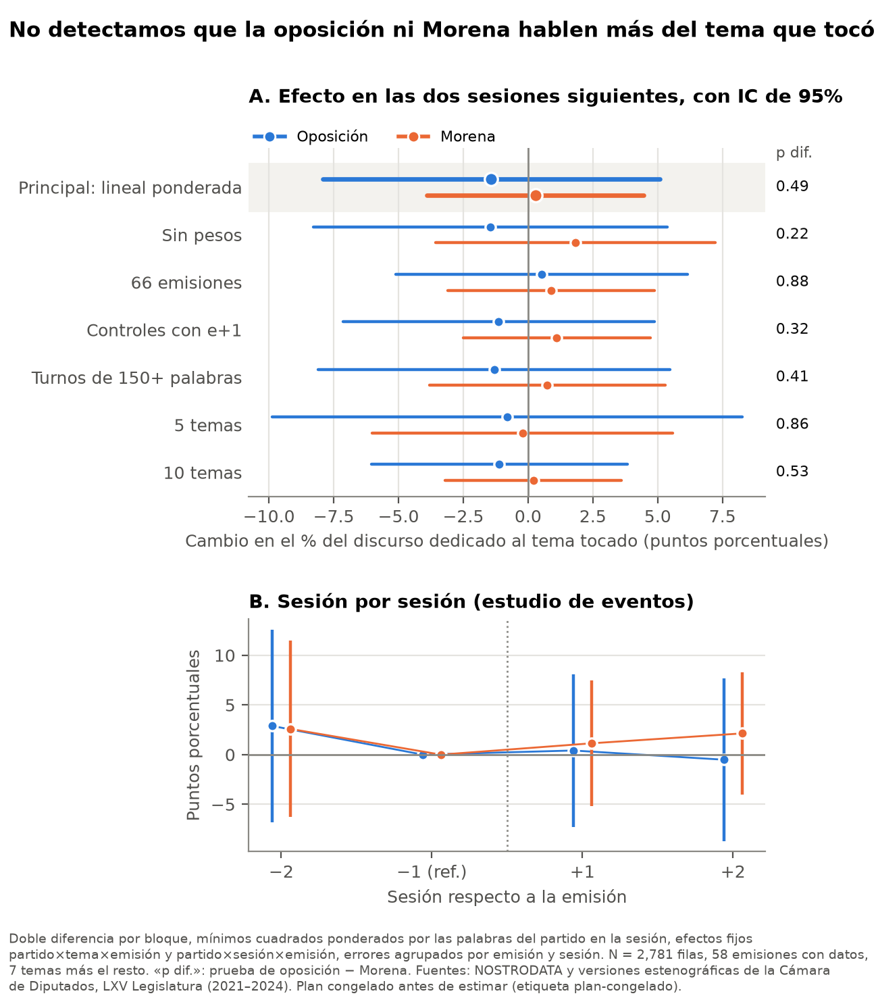

Tópicos de Políticas Públicas II · Equipo 1
“Quién es quién en las mentiras” y la Cámara de Diputados, 2021–2024
Diego Méndez · Tania Hernández · Paola Carmona
12 de noviembre de 2026
Buenas tardes. Somos el Equipo 1. Nuestra pregunta es si la sección de la mañanera que desmentía notas, “Quién es quién en las mentiras”, cambiaba de qué hablaban los diputados. Les vamos a contar qué queríamos medir, cómo lo medimos, por qué elegimos el modelo que elegimos, qué encontramos y qué sigue.
Qué queríamos medir
PAN, PRI, PRD y MC, juntos
El partido del Presidente
¿Responde más uno que otro?
Por qué importa: a la oposición le toca vigilar al gobierno. Si el Ejecutivo influye en de qué habla, también influye en qué se le vigila.
De 2021 a 2024, cada miércoles la mañanera tuvo una sección que desmentía notas de medios y de políticos. Nuestra pregunta: cuando esa sección toca un tema de política pública, como salud o energía, ¿los diputados hablan más de ese tema en las dos sesiones siguientes? Lo medimos por separado para la oposición y para Morena, y después los comparamos. Importa porque la oposición es la que vigila al gobierno: si el gobierno decide de qué se habla, también decide qué se vigila.
Literatura
Nos apoyamos en
Los temas del informe del presidente de EE. UU. aumentan las audiencias del Congreso, si es popular. → La oposición podría responder.
Cada partido tiene fama en ciertos temas y los enfatiza. → La oposición preferiría sus propios temas.
Nos inspiramos en
Si dos diferencias en diferencias tienen el mismo sesgo, al restarlas se cancela.
Los temas y su libro de códigos; fijar el análisis antes de ver datos.
Nos apoyamos en dos textos que apuntan en direcciones distintas. Lovett, Bevan y Baumgartner encuentran que cuando un presidente popular de Estados Unidos destaca un tema en su informe anual, después el Congreso le dedica más audiencias, sobre todo en los primeros meses. De ahí sale que la oposición podría responder. Ellos no comparan partidos dentro de una cámara; eso es lo que agregamos. Petrocik dice que cada partido tiene fama de manejar mejor ciertos temas y que sus candidatos los enfatizan. Aplicarlo a la tribuna es extensión nuestra: la oposición preferiría sus temas a los de la mañanera. Del lado del método, Olden y Møen muestran que si dos diferencias en diferencias tienen el mismo sesgo, al restarlas se cancela; por eso comparamos oposición contra Morena. Los temas vienen del Comparative Agendas Project, y de Simmons y coautores tomamos la idea de fijar el análisis antes de ver datos.
Qué esperábamos
| Si sale… | Quiere decir… |
|---|---|
| Oposición y Morena suben parecido | La mañanera mueve la agenda de toda la Cámara (como Lovett et al.) |
| Morena sube más | Responde más el partido del Presidente |
| La oposición no se mueve | La oposición se queda en sus temas (extensión de Petrocik) |
| Ninguno se mueve | La sección no mueve la agenda de nadie, al menos no en un tamaño detectable |
Antes de ver datos escribimos qué significaría cada resultado. Si los dos bloques suben parecido, la mañanera mueve a toda la Cámara. Si Morena sube más, responde más el partido del Presidente. Si la oposición no se mueve, se queda en sus temas, como en la extensión de Petrocik. Y si ninguno se mueve, la sección no mueve la agenda de nadie en un tamaño que podamos detectar. Guarden esta tabla: vamos a volver a ella al final.
Los datos
64 emisiones
317 desmentidos (“ítems”), cada uno con un tema
154 sesiones
2,316 intervenciones donde el partido elige de qué hablar
Ventana:
sesión −2
sesión −1
miércoles: la sección
sesión +1
sesión +2
Fuentes: transcripciones de NOSTRODATA; versiones estenográficas del Pleno, LXV Legislatura (sept. 2021 – abr. 2024), sesiones ordinarias.
Tenemos dos fuentes. De la mañanera, las 64 emisiones de la sección, con 317 desmentidos; a cada uno le asignamos un tema. De la Cámara, las versiones estenográficas del Pleno de la LXV Legislatura: 154 sesiones y 2,316 intervenciones en las partes donde el grupo elige de qué hablar, como iniciativas, proposiciones y agenda política. Para cada emisión tomamos las dos sesiones anteriores y las dos posteriores en el mismo periodo. La sesión de la tarde del mismo miércoles no cuenta como posterior, porque su orden del día se cerró antes de la mañanera.
Cómo etiquetamos los temas
Un desmentido de la sección o una intervención de un diputado
Sigue nuestro libro de códigos: 21 temas del Comparative Agendas Project y “sin tema”
“Es falso que falten medicamentos” → Salud
Es estable: clasificamos dos veces una parte, en lotes distintos. Salieron iguales 92 de 100 intervenciones y 6 de 8 secciones.
Para saber de qué trata cada texto usamos agentes de Claude Opus 5.5. Cada desmentido y cada intervención recibe un solo tema: el de la política pública de la que trata, según un libro de códigos con los 21 temas del Comparative Agendas Project y una categoría para lo que no es política pública. Por ejemplo, “es falso que falten medicamentos” va a salud. Primero probamos el libro con textos fuera de la muestra y lo congelamos. Luego clasificamos dos veces una parte para ver si el modelo es consistente: 92 de 100 intervenciones salieron iguales. Pero que sea consistente no quiere decir que acierte. Para eso está la validación a mano.
Validación a mano
0.87
Acuerdo entre nosotros
Alfa de Krippendorff; la meta era 0.80
96%
El modelo coincide
En las 135 unidades en que los dos codificadores coincidimos
95%
Con la oposición (Morena: 100%)
Acierta casi igual con los dos bloques
Cómo: 100 intervenciones (50 y 50) y 60 desmentidos al azar; tres codificadores, dos por texto, sin ver partido, fecha ni respuesta del modelo. Por qué sirvió: si el modelo acertara más con un bloque, la comparación estaría sesgada.
Tres de nosotros codificamos a mano 160 textos elegidos al azar: 100 intervenciones, mitad oposición y mitad Morena, y 60 desmentidos. Cada texto lo codificaron dos personas, sin ver el partido, la fecha ni lo que dijo el modelo. Primero, nuestro acuerdo: un alfa de Krippendorff de 0.87, arriba de la meta de 0.80 que fijamos. Segundo, donde los dos coincidimos, el modelo dice lo mismo en 96% de los casos. Y tercero, lo más importante para nuestra pregunta: acierta igual con la oposición que con Morena. Si acertara más con un bloque, la comparación entre bloques estaría sesgada. Por eso la validación sirvió: nos dice que la medida es confiable y que no favorece a nadie.
El diseño
| % del discurso de la oposición | Antes | Después | Cambio |
|---|---|---|---|
| Salud (la sección lo tocó) | 4% | 6% | +2 |
| Temas de control | 8% | 8% | 0 |
| Efecto | +2 puntos |
Tratado: el tema lo tocó esta emisión y no la anterior.
Control: no lo tocaron la anterior, esta ni la siguiente.
Lo mismo para Morena, y luego restamos.
Una regresión hace esta cuenta para las 64 emisiones, 7 temas y 5 partidos a la vez, con errores agrupados por emisión y por sesión.
El diseño es una diferencia en diferencias para cada bloque. El ejemplo: un miércoles la sección desmiente una nota sobre falta de medicamentos. Vemos el porcentaje del discurso de la oposición dedicado a salud antes y después: pasó de 4 a 6%. A eso le restamos lo que cambiaron los temas que nadie tocó, que aquí no cambiaron. El efecto es de 2 puntos, que sobre una base de 4% es 50% más. Un tema cuenta como tocado si la emisión lo tocó y la anterior no, para que no sea una historia que ya venía. Hacemos lo mismo para Morena y comparamos. La amenaza principal es que una noticia haga que todos hablen del tema; eso afectaría el efecto de cada bloque, pero no su resta si los mueve igual, que es el argumento de Olden y Møen.
Por qué una regresión lineal
Efecto estimado cuando metimos a la oposición un efecto conocido (mediana de 100 simulaciones)
Efecto que pusimos
+63%
Lineal ponderada
+66%
Poisson
+90%
Los dos detectan el efecto igual de seguido. Pero cada ventana tiene 4 sesiones, casi todas en cero: la lineal quita exacto el nivel normal de cada grupo y el Poisson no. Lineal = principal; Poisson = robustez.
Simulación con los discursos reales y temas asignados al azar, antes de ver datos reales. Con efecto cero, la lineal rechaza 6% de las veces.
El profesor nos preguntó si usar Poisson o una regresión lineal. Lo decidimos con una simulación, antes de ver cualquier dato real: tomamos los discursos reales, les pusimos temas al azar, metimos un efecto de tamaño conocido y vimos qué modelo lo recuperaba. Con un efecto verdadero de 63%, la lineal ponderada estima 66%; el Poisson, 90%. Los dos detectan el efecto igual de seguido, pero el Poisson exagera su tamaño. La razón: cada ventana tiene solo cuatro sesiones y casi todas en cero, y con tan poca información el Poisson no puede quitar bien el nivel normal de cada partido y tema; la lineal lo quita exacto restando promedios. Por eso la lineal es el modelo principal y el Poisson queda como robustez.
Antes de ver resultados
Etiqueta “plan-congelado” en GitHub, con cada decisión escrita
La especificación principal, una vez; cada corrida queda registrada
Con fechas barajadas, la tubería da cero: 6% de rechazos
Antes de estimar, congelamos el plan. Siguiendo a Simmons y coautores, que muestran cómo las decisiones tomadas después de ver datos inflan los falsos positivos, escribimos cada decisión: el modelo, los temas, la ventana y todas las pruebas de robustez. El 10 de noviembre lo subimos a GitHub con una etiqueta. Antes probamos la tubería con fechas barajadas: daba un efecto cercano a cero y rechazaba 6% de las veces, como debe ser. Y la especificación principal la corrimos una sola vez. Así que lo que van a ver es lo que salió, no la mejor de muchas pruebas.
Resultados
Oposición: −1.4 puntos
IC 95%: −7.9 a +5.1 · p = 0.66
Morena: +0.3 puntos
IC 95%: −3.9 a +4.5 · p = 0.89
Diferencia: −1.7 puntos
IC 95%: −6.6 a +3.2 · p = 0.49

Este es el resultado. Después de la sección, la oposición dedica al tema tocado 1.4 puntos menos de su discurso, y Morena 0.3 puntos más. Ninguno es distinto de cero: los intervalos cruzan el cero con mucho, y la diferencia entre bloques tampoco es significativa. La gráfica de la derecha muestra la especificación principal arriba, sombreada, y las seis variantes que fijamos antes: sin pesos, con 66 emisiones, con otra definición de control, solo turnos largos, 5 y 10 temas. Todas dicen lo mismo. Abajo, sesión por sesión: no hay subida antes de la emisión, así que no vemos tendencias previas, y tampoco después. La permutación de fechas da p de 0.69 para la oposición. Una nota: 58 de las 64 emisiones aportan datos; en las otras seis las sesiones fueron solo de dictámenes y nadie habló en las secciones libres.
Cómo leerlo
¿Es un buen resultado? Es un resultado honesto. Lo que sí podemos decir: podemos descartar efectos grandes. Con el intervalo de confianza, la oposición no sube más de unos 5 puntos, que sería más de 66% sobre su nivel normal; para Morena, el tope es de unos 4.5 puntos. Y no depende de una decisión: las siete variantes, el estudio de eventos y la permutación coinciden. Lo que no podemos decir es que el efecto sea cero. Los intervalos son anchos: los datos reales salieron más ruidosos que los de la simulación, así que un efecto moderado, de 25 o 50%, podría estar escondido. Y volviendo a la tabla del principio: estamos en la última fila, ninguno se mueve en un tamaño detectable, pero no podemos distinguir si es porque la oposición se queda en sus temas o porque la sección no mueve a nadie.
Siguientes pasos
Por partido, por blanco del desmentido, antes y después de sept. 2023, primera o segunda sesión
¿Responde más la oposición cuando la sección toca uno de sus temas? (Petrocik)
Un partido puede hablar del tema del rival desde su propio ángulo
Más texto por ventana para detectar efectos moderados
Para el trabajo final tenemos cuatro pasos. Primero, la heterogeneidad que prometimos en la metodología, una dimensión a la vez y marcada como exploratoria. Ojo: el acuerdo sobre a quién desmiente cada ítem fue bajo, así que esa la vamos a leer con cuidado. Segundo, los temas propios de cada partido: Petrocik predice que la oposición respondería más cuando la sección toca uno de sus temas; creemos que es lo que el profesor quiso decir con “cada partido se cree sus propios temas”, y le vamos a preguntar. Tercero, medir el ángulo y no solo el tema, porque un partido puede hablar del tema del rival para rebatirlo. Y cuarto, buscar más texto por ventana para tener poder contra efectos moderados. Gracias.